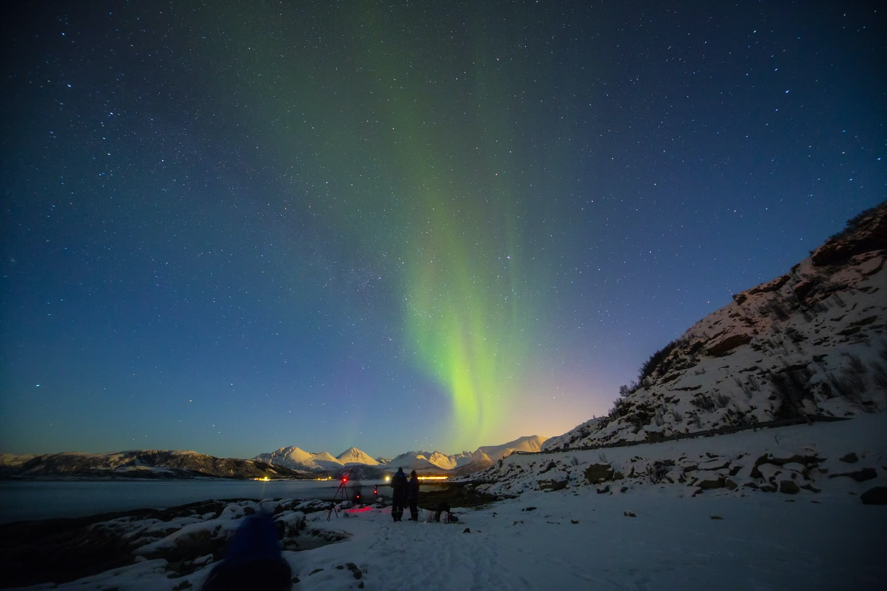
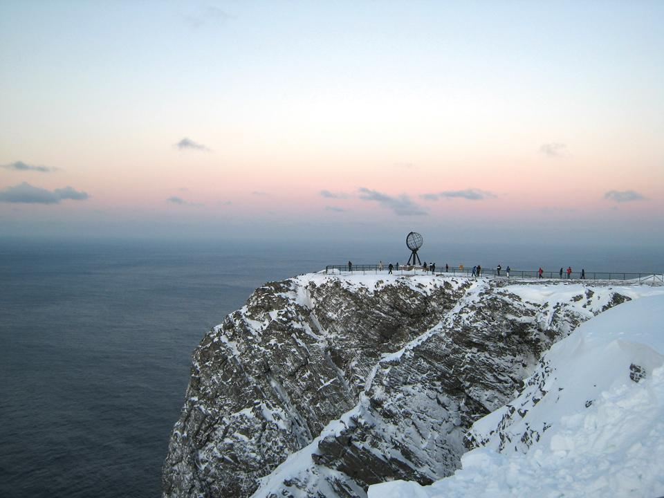

Discover the day-by-day itinerary, created just for you:
Day 01 - Arrival, visit to Wildlife Park, Santa Park and Sauna evening
After an evening flight and good night's rest, get the trip started with visit to Ranua Wildlife Park, experience Santa Park, then warm up&relax at Wild Nordic sauna

Day 02 - Visit Arktikum Museum, Santa Claus Village, meet Santa's Reindeer, take a husky ride and overnight in an igloo
Get ready to learn about the Arctic! Start the day by visiting Arktikum museum, then drive to Santa Claus Village to meet Santa and his elves, then take a ride on Santa's reindeer. Then, meet the huskies at the Husky Park and take a ride with them. Finish the day at the fabulous Santa's Glass Igloos.

Day 03 - Traditional sami farm visit, ski afternoon in Levi and fabulous spa evening
Drive to the traditional farm Porofarmi, where you can learn about sami life and their reindeer. Then, drive to Levi ski resort for a skiing lesson. Finish the day with a relaxing spa evening.

Day 04 - Ivalo and Saariselka full day on the ice.
Drive North to the small town of Saariselka. We are way past the Arctic circle at this point! Get the full winter experience with guided winter sports on the frozen lake, and go hunting for the Northern Lights at night.

Day 05 - Drive from Ivalo all the way to the end of the map: North Cape
This will be a full day of driving, but completely worth it! Drive all the way to Honningsvag, then take the road to Nordkapp, and see the view from the very edge of the world!

Day 06 - Final day - get ready to fly back home
This has been a long adventure! Have a relaxing morning in Ivalo, then take the evening flight back to Helsinki and then home.